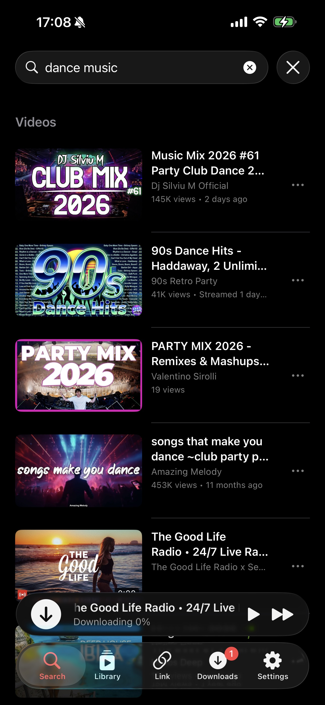
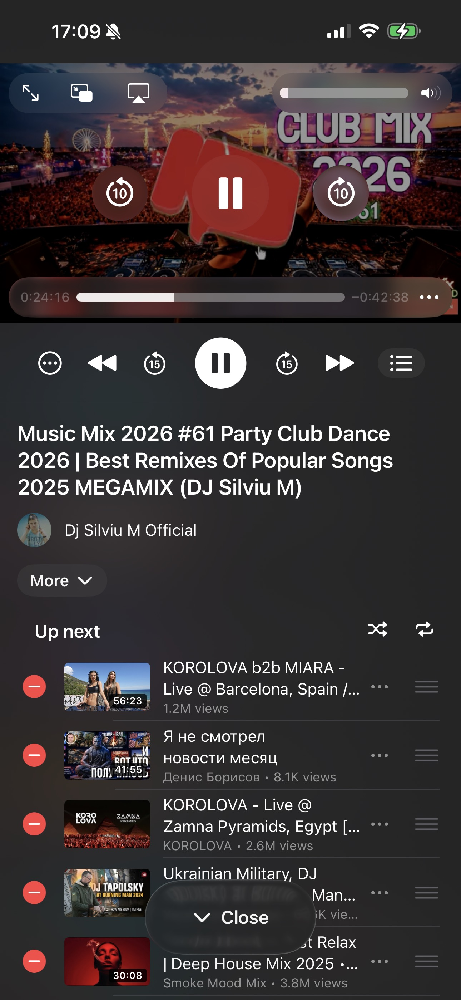
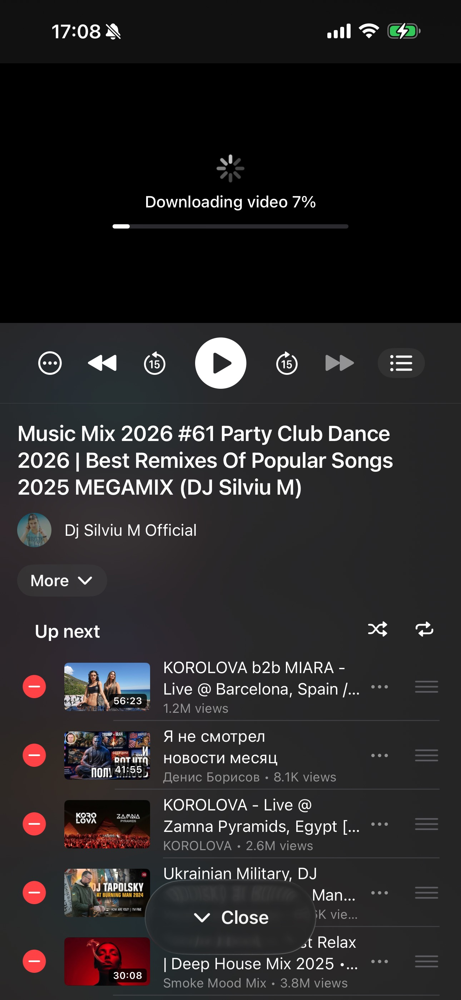

Watch
Home feed, trending, search with autocomplete, channel pages, playlists, recommendations, comments, likes, dislikes, replies, translations.
Open source · MIT-style license · iOS 17+
Vidacity replicates the YouTube mobile app surface but removes the ads, the tracking, and the App-Store-only restrictions. Then it adds a universal downloader on top.
Home feed, trending, search with autocomplete, channel pages, playlists, recommendations, comments, likes, dislikes, replies, translations.
Sign in with your YouTube account via a real in-app browser. Subscriptions, watch history, your playlists, liked videos and Watch Later all sync.
Offline copies of any video you play. Plus a dedicated Link tab for ~2,000 yt-dlp-supported sites: Instagram, TikTok, X, Vimeo, SoundCloud.
Lock-screen controls, AirPlay, Picture-in-Picture, system Now Playing. Music keeps playing when you switch apps or turn off the screen.
No telemetry, no remote logging, no third-party SDKs. Cookies live only in the iOS Keychain. Stream URLs are in-memory and expire in 30 minutes.
Fully translated in English, Spanish, Russian, German, and French via Apple's String Catalog. Dark mode only, because the whole app is designed for it.
Screenshots from iPhone 17 Pro on iOS 26. The app is dark-only by design.






No App Store. No paid Apple Developer account required. You'll need a Mac with Xcode and a free Apple ID.
Download Xcode 16 or 26 from the Mac App Store. The first launch takes a while, because it installs the iOS SDK in the background.
Xcode → Settings → Accounts → + → Apple ID. A Personal Team appears under your account. This is the free signing identity. No paid developer enrollment needed.
git clone https://github.com/leokossdev/vidacity.git
cd vidacity
open Vidacity/Vidacity.xcodeprojIn Xcode, select the Vidacity target → Signing & Capabilities → set the Bundle Identifier to something unique to you (e.g. com.yourname.vidacity). Set Team to your Personal Team.
Connect via USB (or pair wirelessly in Finder). On the device: Settings → Privacy & Security → Developer Mode → On. The device reboots.
Pick your device from the Xcode destination dropdown and press ⌘R. First time only: on the device, Settings → General → VPN & Device Management → trust your developer profile.
Vidacity glues together a stack of battle-tested libraries. Nothing custom for things others do better. Full credit to the maintainers below.
The download engine. Extracts stream URLs from YouTube and ~2,000 other sites. Runs in-process via PythonKit.
Cookie-based YouTube data layer. Search, comments, playlists, subscriptions, likes, all without a Google API key.
In-process video and audio muxing, transcoding to H.264 / MP3. Compiled as a static library for iOS.
Brings yt-dlp + Python to iOS via PythonKit. Auto-updates the yt-dlp Python module weekly.
Disk-cached image loader. Powers every thumbnail and channel avatar in the app.
The expanding mini-player above the tab bar. Same interaction model as Apple Music and Podcasts.
Secure Keychain wrapper for storing YouTube session cookies. Cookies never touch disk or any log.
The animated audio bars that mark the currently-playing item in the up-next queue.
All Swift Package dependencies are pinned in the Package.resolved manifest and resolve automatically on first build.
Couldn't find what you're looking for? Open an issue on GitHub or email leokossdev@gmail.com.
Yes. Vidacity is 100% free and open source under an MIT-style license. There are no ads, no tracking, no in-app purchases, no premium tier. The source code is published on GitHub and you build the app yourself.
The Link tab supports every site that yt-dlp can extract, roughly 2,000 today. That includes YouTube, Vimeo, X/Twitter, TikTok, Instagram, SoundCloud, Reddit, Twitch, Dailymotion, Bilibili, and many more. yt-dlp updates automatically every 7 days inside the app so new sites and fixes arrive without rebuilding.
No. A free Apple ID is enough to sideload Vidacity to your own iPhone or iPad via Xcode. The catch is that free-signed builds expire after 7 days and have to be re-installed. The paid Apple Developer Program ($99 a year) extends that to a full year and removes the device-count cap, but it isn't required.
Vidacity authenticates the same way the YouTube website does, via cookies captured from an in-app WKWebView. There is no public Google API key, no automation that simulates human input, no scraping at a rate above normal browsing. We have no evidence of bans, but YouTube can change their policy at any time. Sign in with caution and use a secondary account if you want to be safe.
Yes. Vidacity is a universal app. iPhone and iPad share the same binary. The layout adapts to wider screens and the popup player remains pinned above the tab bar on both.
Yes, via Apple's "Designed for iPad" runtime on Apple Silicon Macs (M1 and newer). Just pick the Mac destination in Xcode and run. There are extra keyboard shortcuts and a menu-bar Reveal-in-Finder integration for the Mac runtime. Mac Catalyst is not currently supported because Vidacity depends on iOS-only Python and FFmpeg slices.
That's an Apple-imposed restriction on free Apple Developer accounts, not something Vidacity controls. Free-signed provisioning profiles are valid for 7 days. Tools like AltStore can auto-resign and re-install in the background to make the limit invisible. With a paid $99/year developer account the certificate is valid for a full year.
Yes. The Library tab presents a "Sign in to YouTube" button that opens the real YouTube login inside an in-app WebView. Once you complete sign-in, Vidacity captures the session cookies, stores them in the iOS Keychain (never on disk or in any log), and uses them to fetch your subscriptions, history, playlists, liked videos, and Watch Later. Sign out wipes the Keychain immediately.
Whatever yt-dlp exposes for the source video. The Preview screen lets you pick a video format (resolution and codec, typically up to 1080p or higher when YouTube serves it) and an audio format separately, with optional on-device transcoding to H.264 for Apple-friendly playback and to MP3 for audio-only saves. Conversion runs in-process via FFmpeg with no network round trip.
No. Vidacity is for personal use, sideload, or TestFlight distribution only. Apple's App Store guidelines (specifically rule 5.2.3) prohibit unofficial YouTube clients, so a public App Store release isn't possible. Build from source via Xcode or get a TestFlight invite from a maintainer.
The whole project lives on GitHub. Star it, fork it, file issues, send PRs. It's a hobby project that lives off contributions.